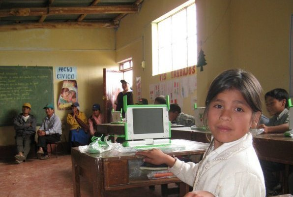
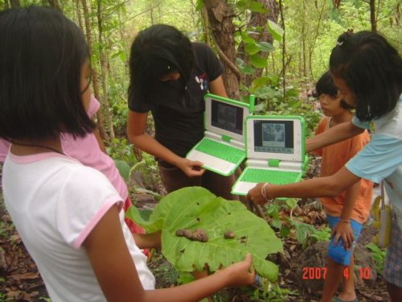

المقدمة
الكمبيوتر المحمول هو أداة تعليمية مصممة لتكون بين ايدي كل طفل. باستعمال البرامج الحرة والمفتوحة و جهود مبرمجين في مختلف أنحاء العالم نجحت المنظمة في توزيع الحواسيب في مختلف أنحاء العالم وبلغات مختلفة.

في مدرسة في دولة بيرو بأمريكا الاتينية-
جهاز XO يقوم بتشغيل برامج مفتوحة المصدر تسمى "سُكًر"، التي تسمح لأي شخص لتشغيل ونسخ وتوزيع ، دراسة ، وتغيير وتحسين البرمجيات. الكثير من الناس المساهمين في OLPC يعتقدون أن هذه الحريات هي ضروربة لتحقيق الأهداف التعليمية التي أسست من أجلها منظمة OLPC.
بعد الاطلاع على قصص عن حاسوب مصمم للأطفال أو بعد رؤية صور لجهاز كمبيوتر صغير في يد طفل ، قد نتساءل عن قدرات XO. ولكن عندما ترى هذا الكمبيوتر صغير وقوي معألوانه الفريدة من نوعها ، سوف ندرك XO وامكاناته الكبيرة للأطفال في جميع أنحاء العالم.
عندما تقوم بفتح الكمبيوتر، سوف ترى شاشة عالية الوضوح، وسهلة القراءة حتى تحت أشعة الشمس في النهار. يمكنك أيضا تحويل الجهاز الى قارئ للكتب الإلكترونية.جهاز XO مصمم للاستخدام أيضا في الهواء الطلق ويمكنه أيضا تحمل الظروف القاسية التي يعيشها الأطفال في المناطق النائية.
جهاز XO هو أداة تعليمية عظيمة.ويمكنه أن يكون مرافق جيد للأطفال، صديق للأطفال. يمكنه أن يتحول الى كتاب، فالأطفال لن يجدو مشكلة في قراءة كتب هامة من الأنترنت. الأطفال حول العالم قد احبوا جهاز XO وسييتمرون في ذلك.
نحن نتمنى أن تتمكنوا من معرفة المزيد عن الجهاز عبر قراءة هذه الصفحات ، حتى تتمكنوا من معرفة المزيد باستعمال الحاسوب المحمول.

في غابة في بلد التايلند
المؤلف : المقدمة
© آن جنتل 2006، 2008
التعديلات:
أبحيشاك إندوريا 2009
أدام هايد 2006, 2007, 2008
أي هولت 2008
لوك فراوون 2008
مايكل ستون 2008
روب ميسن 2008
ساندي كولفير 2008
سيث وودورث 2008
توم بويل 2008
الرخصة : General Public License
Produced in FLOSS Manuals